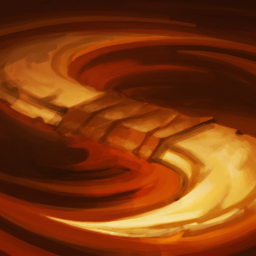
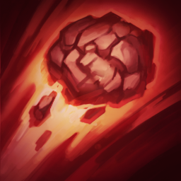
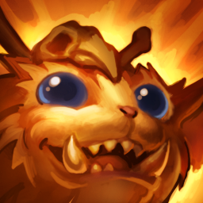
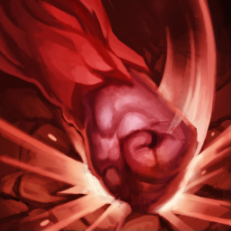
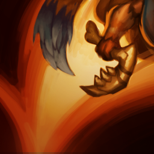
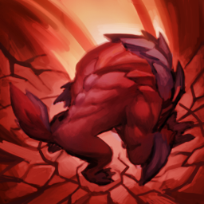
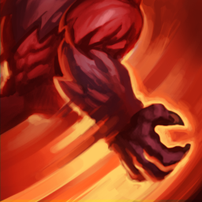

Gnar
The missing link
Time marches on for most, but not Gnar. A yordle born millennia ago, Gnar was captured and trapped in true ice, frozen - quite literally - in time. Civilizations formed and fell as the prehistoric yordle vacantly stared on, but nothing – not even true ice – could confine Gnar forever. After breaking free, he wandered Runeterra until he found himself taken in by his yordle descendants. But, as they would soon discover, there’s a beast behind the boy.
Abilities

Passive:Rage Gene
Gnar builds up rage in combat. Once he fills his rage bar, Gnar’s next ability transforms him into Mega Gnar, giving him bonus armor, magic resist, health and attack damage at the expense of movement speed, attack speed and attack range. If Mini Gnar doesn’t use an ability, he transforms into Mega Gnar after a few seconds anyway. While in Mega Gnar form, his rage slowly runs down, and once it’s exhausted, he turns back into Mini Gnar. After transforming back, Mini Gnar briefly becomes tired and can't gain rage for a few seconds.

Q: Mini Gnar - Boomerang Throw
Gnar chucks his boomerang in a target direction, dealing damage to the first enemy struck while applying a slow. After striking an enemy, the boomerang slows before returning to Gnar, dealing reduced damage to all enemies in its path. If Gnar catches it, he reduces Boomerang Throw’s cooldown significantly.
Q: Mini Gnar - Boomerang Throw
Gnar launches a huge boulder in a target direction, damaging and slowing the first target in the boulder’s path along with all nearby enemies. Once it’s landed, Gnar can pick the boulder up to reduce Boulder Toss’ cooldown.

W: Mini Gnar – Hyper (passive)
Every third attack or ability against a target deals percent max health as magic damage. Whenever Hyper triggers, or when Mega Gnar transforms back into Mini Gnar, he gains a moderate movement speed boost that decays over time.
W:Mega Gnar - Wallop
Gnar stands on his back legs before slamming his fists into the ground, damaging and briefly stunning all enemies in front of him.

E: Mini Gnar - Hop
Gnar jumps in a target direction and gains a moderate attack speed boost. If Gnar lands on a unit, he bounces, hopping again in the same direction. If Gnar hops onto an enemy unit, he also damages and slows them.
E: Mega Gnar - Crunch
Gnar launches himself in a target direction, damaging and slowing all enemies he lands directly on.

R: Mega Gnar - GNAR!
Gnar throws a tantrum, tossing all enemies around him in a target direction. All enemies thrown are slowed and damaged, while enemies thrown into walls, including turrets and base structures, suffer extra damage and are stunned.